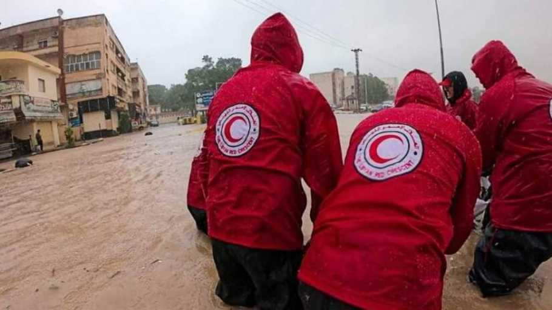

American Red Cross of Medford, MA
About Us: Since 1881
The Medford, MA chapter of the American Red Cross is a sub-set of the largest and most diverse service organization in the United States. We are affiliated with the larger American Red Cross Massachusetts Region, which serves the 7.029 million residents of the 351 cities and towns of Massachusetts. Learn More >>>
News:
-
A storm system is headed for the East Coast this weekend, bringing strong winds, heavy rain, possible flooding and the threat of a dangerous storm surge to millions of people from the Carolinas through the Mid-Atlantic states north to New England. Read More >>>
-
The American Red Cross continues to run two large relief responses ─ one across the Southeast helping people affected by Hurricane Idalia ─the other more than 4,500 miles away in Hawaii after the tragic wildfires there.Thousands of people have been displaced and the Red Cross is providing shelter, food, health and mental health services and relief supplies. In addition, the organization is helping those affected plan their next steps as they begin to recover. Read More >>>
-

It’s been more than a week since what was described as violent and brutal flooding hit northeastern Libya, claiming the lives of thousands of people, including three Libyan Red Crescent volunteers who lost their lives while trying to save others. The deepest condolences of Red Cross and Red Crescent Societies around the world go to their loved ones. Other Red Crescent volunteers are missing, and several were injured. Read More >>>
Resources:
American Red Cross of Medford, MA